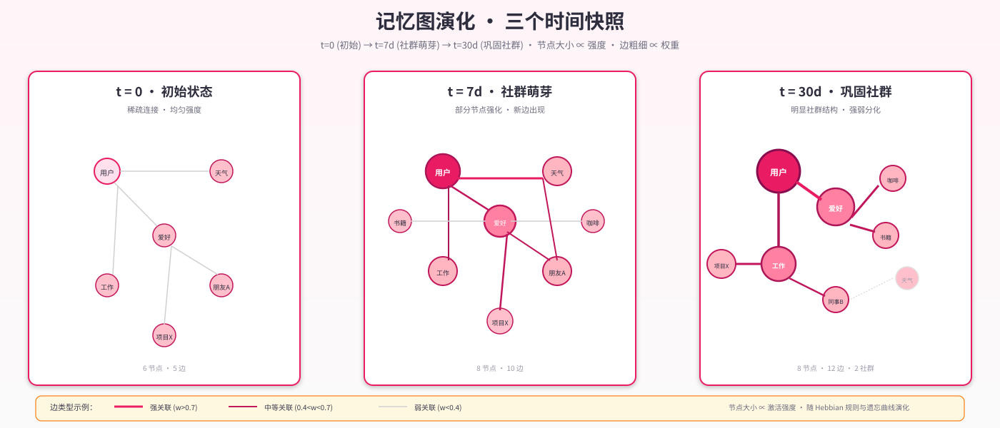

第 7 章 · 作为活体图的记忆系统¶
"记忆不是冷冰冰的数据库索引，而是一张活的图。每一次回忆都是一次激活传播，每一次共同激活都让连接更紧密一分。遗忘不是删除，而是淡出；重要的东西会因为情感与重复自然浮现。" — 《连续记忆网络设计笔记》，Neo-MoFox 开发日志, 2025
7.1 设计哲学：为什么"记忆 ≠ 数据库"？¶
主流的 LLM Agent 记忆系统（MemGPT、Zep、Mem0）大多把记忆设计为键值存储 + 向量检索的组合：用户问一个问题，系统用语义相似度检索最匹配的 top-K 条目，把它们塞进 prompt，然后调用 LLM。这当然有效，但它与人类的记忆有本质的不同。
人类的记忆至少有三条特质是"数据库"范式无法捕捉的：
-
联想性（Associativity）：回忆一件事会自然地"牵出"另一件事，即便后者与原始问题并不直接匹配。这种"想到 A 又想到 B"的过程是图结构中激活扩散（spreading activation）的产物，而非向量空间中的余弦相似度。
-
动态强度（Dynamic Strength）：记忆有"新鲜"与"淡出"之分。越常回想的东西越牢固（testing effect），越久不用的东西越模糊（Ebbinghaus 遗忘曲线）。这是时间依赖的连续动力学，不是静态的相似度分数。
-
情感选择性（Emotional Selection）：带有强烈情感的记忆更不容易遗忘，且更容易在做梦或反思时被优先重放。这需要记忆节点携带情感标注，并让情感状态参与衰减与巩固过程。
Neo-MoFox 的记忆系统不是数据库，而是一张活体图（living graph）：
- 节点（MemoryNode）有激活强度、访问次数、情感效价与唤醒度；
- 边（MemoryEdge）有 6 种语义类型、权重、强化量，且遵循 Ebbinghaus 衰减；
- 检索不是简单的相似度排序，而是三路混合（BM25 + Vector + RRF）+ 激活扩散；
- 遗忘不是 LRU 缓存清除，而是指数衰减 + 情感保护 + 复习效应；
- 巩固不是手工标注"重要"，而是在做梦时通过 Hebbian 学习自动增强共激活的边。
这是一套与第 5、6 章的 SNN + 调质层同构的设计：连续性、自下而上学习、系统涌现三原则在记忆层的完整体现。
7.2 数据模型：MemoryNode 与 MemoryEdge¶
7.2.1 MemoryNode 字段表¶
记忆节点是知识图中的基本实体，分为两种类型：FILE（文件型记忆）与 CONCEPT（概念型记忆，目前预留）。完整字段如下：
| 字段 | 类型 | 含义 | 默认值 |
|---|---|---|---|
node_id |
str |
唯一标识符，格式 "file:<md5_12>" 或 "concept:<md5_12>" |
— |
node_type |
NodeType |
FILE 或 CONCEPT |
FILE |
file_path |
str \| None |
工作空间相对路径（仅 FILE 类型有效） | None |
content_hash |
str \| None |
SHA-256 前 16 位，用于检测内容变化 | None |
title |
str |
节点标题（用于显示与检索） | "" |
activation_strength |
float |
当前激活强度，范围 [0, 1] | 0.5 |
access_count |
int |
访问次数（复习效应） | 0 |
last_accessed_at |
float \| None |
最后访问的 Unix 时间戳 | None |
emotional_valence |
float |
情感效价（正/负），范围 [-1, 1] | 0.0 |
emotional_arousal |
float |
情感唤醒度（强度），范围 [0, 1] | 0.0 |
importance |
float |
主观重要性，范围 [0, 1] | 0.5 |
embedding_synced |
bool |
向量是否已同步到 ChromaDB | False |
节点 ID 生成规则（plugins/life_engine/memory/nodes.py:80）：
./、posixpath.normpath 规范化。这保证跨平台路径的稳定性。
节点访问时的激活增量（nodes.py:562）：
$$
\text{activation_strength} \gets \min(1.0, \text{activation_strength} + 0.1)
$$
每次访问让强度增加 0.1，上限为 1.0。这是最简单的"使用即强化"机制。
7.2.2 MemoryEdge 字段表¶
记忆边表示节点之间的关联，核心字段如下：
| 字段 | 类型 | 含义 |
|---|---|---|
edge_id |
str |
唯一标识符，格式 "{from_id}--{edge_type}-->{to_id}" |
from_node |
str |
起点节点 ID |
to_node |
str |
终点节点 ID |
edge_type |
EdgeType |
边类型（6 种，见 §7.3） |
weight |
float |
当前权重，范围 [0, 1] |
base_strength |
float |
基础强度（初始权重） |
reinforcement |
float |
Hebbian 强化累积量 |
activation_count |
int |
激活次数 |
last_activated_at |
float \| None |
最后激活时间戳 |
reason |
str \| None |
边创建的语义原因（可选） |
bidirectional |
bool |
是否为双向边 |
权重计算公式（memory/decay.py:289）：
$$
\text{weight} = \text{base_strength} + \text{reinforcement} \cdot e^{-\lambda \Delta t}
$$
其中 \(\Delta t\) 为距上次激活的天数，\(\lambda = 0.05\)。初始创建时，base_strength 与 weight 相等，reinforcement = 0。
7.3 边的 6 种类型与语义解释¶
记忆图中的边不是无差别的"相关"，而是具有显式语义类型。这使得激活扩散时可以根据边类型做差异化的衰减与传播策略。
| 类型 | 符号 | 方向 | 语义 | 使用场景 | 典型强度 |
|---|---|---|---|---|---|
RELATES |
— |
双向 | 相关 | 主题相近的文件、知识碎片 | 0.3–0.6 |
CAUSES |
→ |
单向 | 因果 | A 导致 B，如"提出需求 → 编写代码" | 0.5–0.8 |
CONTINUES |
⇢ |
单向 | 延续 | A 是 B 的续写，如日记的连续性 | 0.6–0.9 |
CONTRASTS |
⇄ |
双向 | 对比 | 观点对立、方案对比 | 0.4–0.7 |
MENTIONS |
⤏ |
单向 | 提及 | 文件引用了某个概念/文件 | 0.2–0.5 |
ASSOCIATES |
⋯ |
双向 | 联想 | 做梦/共激活时动态生成 | 0.15–1.0 |
其中 ASSOCIATES 边最为特殊：它不由人工标注，而是在 REM 阶段通过 Hebbian 学习自动生成。当两个节点在做梦时的激活扩散中被共同激活，且激活强度超过阈值（0.1），系统会自动创建或强化它们之间的 ASSOCIATES 边。这是"共同激活的神经元连接更紧密"的直接体现。
边类型对检索的影响：在激活扩散中，CONTINUES 与 CAUSES 边的权重衰减系数较低（\(\gamma = 0.7\)），因为它们代表更强的语义连续性；MENTIONS 边衰减较快（\(\gamma = 0.5\)），因为它们只是引用而非内容本身的延续。具体实现见 memory/search.py:298。
7.4 Ebbinghaus 启发的衰减算法¶
7.4.1 节点衰减公式¶
记忆强度不是静态的。每过一段时间，未被访问的节点会自然衰减。我们采用 Ebbinghaus 遗忘曲线的指数形式，并加入复习效应、情感保护、重要性保护三重机制：
其中：
- \(\Delta t = \frac{t_{\text{now}} - t_{\text{last\_access}}}{86400}\)，单位为天；
- \(\lambda = 0.05\)，对应约 14 天半衰期（\(e^{-0.05 \times 14} \approx 0.5\)）；
- \(N_{\text{access}}\) 为访问次数（access_count）；
- \(A_{\text{emo}}\) 为情感唤醒度（emotional_arousal ∈ [0, 1]）；
- \(I\) 为重要性（importance ∈ [0, 1]）。
最终 \(S(t)\) 被 clip 到 [0, 1] 范围。
实现位置：plugins/life_engine/memory/decay.py:44
def compute_memory_strength(node: MemoryNode, decay_lambda: float = 0.05) -> float:
if not node.last_accessed_at:
return node.activation_strength
now = time.time()
days_since = (now - node.last_accessed_at) / 86400
# Ebbinghaus 时间衰减
time_decay = math.exp(-decay_lambda * days_since)
# 复习效应（对数增长）
retrieval_bonus = math.log(1 + node.access_count) * 0.1
# 情感与重要性保护
emotional_shield = node.emotional_arousal * 0.2
importance_shield = node.importance * 0.1
strength = time_decay + retrieval_bonus + emotional_shield + importance_shield
return min(max(strength, 0.0), 1.0)
触发时机：每日一次，由 service/integrations.py 中的 MemoryIntegration.maybe_run_daily_decay() 在心跳循环中检查上次衰减日期（存于 _last_decay_date）。若跨越自然日边界，则触发全局衰减。
7.4.2 边衰减公式（仅限 ASSOCIATES 类型）¶
ASSOCIATES 边的权重会随时间衰减，而其他 5 种类型的边（人工标注的结构边）不衰减，因为它们代表稳定的语义关系。
其中：
- \(w_{\text{base}}\) 为 base_strength（初始权重）；
- \(R\) 为 reinforcement（Hebbian 强化累积量）；
- \(\lambda = 0.05\)，与节点衰减系数一致。
当 \(w(t) < 0.1\) 时，边被自动修剪（删除）。这对应生物神经系统中的突触修剪（synaptic pruning）：不再使用的连接会自然消失，避免图结构无限膨胀。
实现位置：memory/decay.py:115
7.5 Hebbian 边强化：使用即增强¶
"共同激活的神经元一起连接"——这是 Donald Hebb (1949) 提出的经典学习规则。在 Neo-MoFox 的记忆系统中，Hebbian 学习体现为：每当两个节点在检索或做梦中被共同激活，它们之间的边（若存在）权重增加；若不存在，则创建一条新边。
7.5.1 激活共现的判定¶
在做梦的 REM 阶段（详见第 8 章），系统会对种子节点做激活扩散（memory/decay.py:139），生成一个 activation 字典：
取 top-15 激活度最高的节点，两两配对。对每一对 \((n_i, n_j)\)，执行 Hebbian 更新。
7.5.2 更新公式¶
若边 \((n_i, n_j)\) 已存在：
其中 \(\alpha = 0.05\) 为学习率（DREAM_LEARNING_RATE）。边际递减项 \((1 - w_{\text{old}})\) 确保权重越接近 1.0 越难再增长，避免饱和。
若边不存在，则创建新边：
- 类型：ASSOCIATES
- 初始权重：weight = 0.15
- 双向：True
实现位置：memory/decay.py:289
def reinforce_edge(edge_id: str, learning_rate: float = 0.05):
old_weight = edge.weight
delta = learning_rate * (1 - old_weight)
new_weight = min(old_weight + delta, 1.0)
edge.weight = new_weight
edge.reinforcement += delta
edge.activation_count += 1
edge.last_activated_at = time.time()
这一机制使得"越常一起想起的记忆，连接越紧密"——这正是记忆网络的自组织特性。
7.6 三路混合检索：BM25 + Vector + RRF¶
当 LLM 或用户发起记忆检索时（如通过 nucleus_search_memory 工具），系统不依赖单一检索算法，而是并行运行三路检索，再用 RRF（倒数排名融合，Reciprocal Rank Fusion）合并结果。
7.6.1 路径 1：全文检索（BM25）¶
利用 SQLite 的 FTS5 模块对 title 与 file_path 建立全文索引。BM25 是信息检索中的经典算法，对词频与文档长度敏感。
SELECT node_id, bm25(memory_nodes_fts) AS score
FROM memory_nodes_fts
WHERE memory_nodes_fts MATCH ?
ORDER BY score DESC
LIMIT 50
归一化（memory/search.py:224）：
$$
\text{score}_{\text{fts}} = \frac{|\text{bm25_score}|}{10.0}
$$
这一路径擅长捕捉字面匹配，如用户问"昨天的日记"，能直接命中文件名包含日期的节点。
7.6.2 路径 2：向量检索（Cosine Similarity）¶
通过 embedding API 将查询文本转为向量，在 ChromaDB 中检索语义相似的节点。
其中 \(\mathbf{q}\) 为查询向量，\(\mathbf{v}_i\) 为节点 \(i\) 的 embedding。
实现位置：memory/search.py:153
这一路径擅长语义匹配，如用户问"关于情感的思考"，能匹配到"心情日记"即便字面上不含"情感"二字。
7.6.3 路径 3：RRF 融合¶
RRF 是一种无参数的融合算法，对多路检索结果的排名而非分数做加权：
其中 \(K = 60\) 为常数（RRF_K），\(\text{rank}_r(d)\) 为文档 \(d\) 在检索路径 \(r\) 中的排名（1-indexed）。若某文档在某路径中未出现，则该项不贡献分数。
优势：RRF 对不同算法的分数尺度不敏感，且天然惩罚"只在某一路径中高分"的偏科节点，偏好在多路径中均表现良好的节点。
实现位置：memory/search.py:264
7.7 激活扩散：把"想到一件事"建模为图遍历¶
即便三路融合已经得到了 top-K 节点，检索仍未结束。人类的回忆是联想性的：看到"猫"会想到"喵星人"，想到"宠物"，想到"上次去宠物店"——这些间接相关的记忆并不一定在原始查询的向量空间近邻中。
Neo-MoFox 通过激活扩散（Spreading Activation）实现这一机制：
7.7.1 算法流程¶
- 初始化：从 RRF 结果的 top-K 节点出发，设初始激活度为 1.0；
- 迭代扩散：对深度 \(d = 0, 1, 2, \ldots, D_{\text{max}}\)（默认 2），对当前激活的节点集：
- 遍历其所有出边（
get_edges_from）； - 按边权重传播激活：
$$
A_{\text{neighbor}} \gets A_{\text{neighbor}} + A_{\text{current}} \cdot w_{\text{edge}} \cdot \gamma^{d+1}
$$
其中 \(\gamma = 0.7\) 为衰减系数（
SPREAD_DECAY）。 -
若 \(A_{\text{neighbor}} \geq \theta_{\text{spread}}\)（默认 0.3），则加入下一轮前沿。
-
阈值过滤：仅保留激活度 ≥ 0.3 的节点作为最终结果。
实现位置：memory/search.py:298
def spread_activation(
initial_nodes: List[str],
db: sqlite3.Connection,
max_depth: int = 2,
spread_decay: float = 0.7,
spread_threshold: float = 0.3
) -> Dict[str, float]:
activation = {nid: 1.0 for nid in initial_nodes}
frontier = set(initial_nodes)
for depth in range(max_depth):
next_frontier = set()
for node_id in frontier:
for edge in get_edges_from(db, node_id, min_weight=0.05):
propagated = activation[node_id] * edge.weight * (spread_decay ** (depth + 1))
if propagated >= spread_threshold:
activation[edge.to_node] = activation.get(edge.to_node, 0) + propagated
next_frontier.add(edge.to_node)
frontier = next_frontier
return {nid: act for nid, act in activation.items() if act >= spread_threshold}
7.7.2 与向量检索的区别¶
| 维度 | 向量检索 | 激活扩散 |
|---|---|---|
| 依赖 | embedding 空间的几何距离 | 图结构的边权重 |
| 结果 | 语义相似的直接匹配 | 间接关联的联想节点 |
| 可解释性 | 黑盒（高维空间距离） | 白盒（可追溯边路径） |
| 生物对应 | 无直接对应 | 神经网络的激活传播 |
这两者是互补的：向量检索找到"相似"，激活扩散找到"相关"。
7.8 注入 Prompt：检索结果如何回到 LLM¶
检索到的节点最终要转化为 LLM 可理解的文本。我们设计了分层注入策略：
7.8.1 工具调用的即时注入¶
当 LLM 调用 nucleus_search_memory(query) 时，返回的 tool result 格式化为：
【直接命中的记忆】(3条)
- 《日记 2025-01-15》[workspace/diary/20250115.md] (相关度 0.87 | .md | 今天 | 2KB)
摘要：今天去宠物店看了猫，超可爱...
情感：正向(0.6) 唤醒(0.4)
- 《养猫指南》[workspace/notes/cat_guide.md] (相关度 0.75 | .md | 5天前 | 8KB)
摘要：如何选择品种、喂养要点...
【联想扩散结果】(2条)
- 《宠物店地址》[workspace/notes/pet_shop.md] (相关度 0.42 | .md | 1周前 | 1KB)
摘要：附近宠物店的联系方式与营业时间。
联想：CONTINUES: 日记中提到的宠物店
💡 提示：以上仅为摘要。如需查看完整内容，可使用 fetch_life_memory 工具读取文件。
实现位置：memory/tools.py 中 nucleus_search_memory 工具的返回格式化。
7.8.2 心跳系统的持久记忆注入¶
对于长期重要的记忆，工作空间中有一个特殊文件 MEMORY.md，其结构化分区（### 持久记忆、### 活跃记忆、### 淡出记忆）会被解析并注入到每次心跳的 user prompt 中。
当 MEMORY.md 文件大小超过 8KB 或条目数超限时，系统会在心跳 prompt 中插入维护提醒（memory/prompting.py），引导 LLM 通过 nucleus_update_node 工具调整节点的重要性或情感标注。
7.9 与 MemGPT/Letta/Mem0 的简明差异¶
| 维度 | MemGPT/Letta | Mem0 | Neo-MoFox |
|---|---|---|---|
| 记忆结构 | 分层存储（上下文窗口 + 外部数据库） | 向量数据库 + KV 存储 | 图结构 + 6 种语义边 |
| 遗忘机制 | LRU 缓存清除 | 无自动遗忘 | Ebbinghaus 指数衰减 + 情感保护 |
| 学习机制 | 显式函数调用 | 无在线学习 | Hebbian 共激活强化（做梦时） |
| 检索方式 | 向量相似度 | 向量相似度 | BM25 + Vector + RRF + 激活扩散 |
| 情感标注 | 无 | 无 | 每节点携带效价与唤醒度 |
| 时间动力学 | 离散（调用时更新） | 离散 | 连续（每日衰减 + 做梦巩固） |
核心差异：MemGPT 的遗忘是"缓存被清除"，Neo-MoFox 的遗忘是"记忆强度连续衰减"；MemGPT 的记忆管理是显式工具调用，Neo-MoFox 的记忆演化是做梦时的自动巩固。 后者更接近人类记忆的生物学机制。
更深入的对比（包括 A-MEM、Zep、LangChain 长期记忆）将在第 12 章 §12.4 展开。
7.10 小结与过渡¶
本章完整描述了 Neo-MoFox 的连续记忆网络——一张活的图，而非冷冰冰的数据库：
- 数据模型：MemoryNode 携带激活强度、访问次数、情感标注；MemoryEdge 有 6 种语义类型与 Hebbian 强化机制；
- 衰减机制：Ebbinghaus 遗忘曲线 + 复习效应 + 情感保护，\(\lambda = 0.05\) 对应 14 天半衰期；
- 强化机制：使用即增强（访问时 +0.1）+ 做梦时的 Hebbian 学习（共激活边权重增长）；
- 检索策略：BM25 + Vector + RRF 三路融合，再叠加激活扩散捕捉联想性；
- 注入策略：工具返回的分层摘要 + 心跳系统的 MEMORY.md 持久注入。
记忆系统的完整生命周期包括： - 白天：被检索、访问、强化（+0.1 激活度）、关联边创建； - 每日：全局衰减，弱节点淡出，弱边修剪； - 做梦：Hebbian 学习在 REM 阶段自动增强共激活的边（第 8 章）。
这是一套自下而上学习的典范：没有人告诉系统"这条记忆重要"，而是使用频率、情感强度、共激活模式自然决定什么被保留、什么被遗忘、什么被关联。
下一章，我们将进入记忆系统的"夜间维护程序"——睡眠与做梦，看看 NREM 如何修剪冗余突触，REM 如何在记忆图上随机游走并生成叙事，以及梦后余韵如何回馈到调质层与心跳 prompt。
Figure F10（见 Figure F10 记忆图节点-边演化）：一张时序动画，展示记忆图在 7 天内的动态变化——新节点创建、边权重衰减、做梦时的 Hebbian 强化、弱边修剪。可视化参数：节点大小 ∝ 激活强度，边透明度 ∝ 权重，边颜色标识类型。

Figure F10 · 记忆图节点-边演化快照¶
本章关键代码锚点：
- 节点模型：plugins/life_engine/memory/nodes.py:37
- 边模型：plugins/life_engine/memory/edges.py:42
- Ebbinghaus 衰减：plugins/life_engine/memory/decay.py:44
- Hebbian 强化：plugins/life_engine/memory/decay.py:289
- 三路检索：plugins/life_engine/memory/search.py:224 (FTS), :153 (Vector), :264 (RRF)
- 激活扩散：plugins/life_engine/memory/search.py:298
- 记忆服务主类：plugins/life_engine/memory/service.py:70